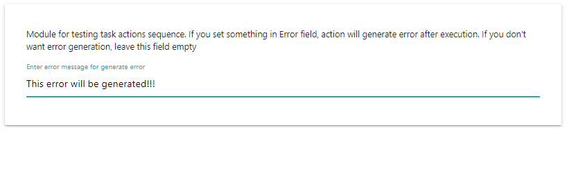

Описание Simple test
Действие служит для организации процесса тестирования автоматизаций. Simple test ничего не выполняет, но может сгенерировать ошибку выполнения действия либо выполниться без ошибок и вернуть введенное значение.
Возвращаемое значение: значение, введенное в поле "Return value"
Описание интерфейса
Error message for generate error
Если в это поле ввести какой-нибудь текст, будет сгенерирована ошибка с этим текстом. Если поле оставить пустым, Simple test просто выполнится.
Return value
Значение, введенное в это поле, будет возвращено действием Simple test